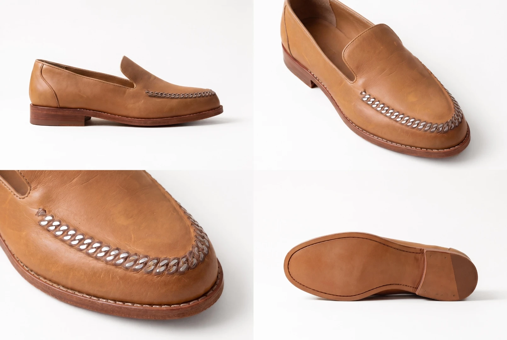

This is a map of areas where we, balance aigency, see practical value in AI tools for factories working with international brands.
Our view on the “brand ↔ manufacturer” relationship comes from four roles we have held ourselves:
This experience shows exactly where money, time, and opportunities with brands are lost at every stage of the process, and which of these losses can be fixed with AI tools right now.
Every one of these four situations represents money you are not making. AI tools solve them using your existing team, without hiring more people.
Below is what AI adoption does in each case and the effect you get.
R&D Department
What we see. The first challenge is development speed. Weeks pass between a brand's request and the launch of a physical sample: understanding what the brand wants, confirming the concept, and only then starting the sample.
What AI adoption gives you:

This was generated from a 4-second phone video of the factory, without any mood boards or tech packs. On a real project, your designer starts from the brand's own materials.
Design Department
What we see. The second challenge is the missed order expansion window. The model is approved. At this moment, the brand is open to expanding the product matrix: variations in color, material, texture, prints, graphics, and details. The design department physically cannot prepare enough options while the brand is still ready to look at them. As a result, the brand orders a minimum volume or fills out their product line somewhere else.
What AI adoption gives you:
Four AI-generated variations of one approved model. On a real order, your team prepares dozens of options across color, material, texture, and details in a few hours.
Sales Department
What we see. The third challenge is losses in the sales department. Agreements get lost during calls, follow-ups are dropped, and verbal decisions are passed to production from memory. Problems surface on the line, and orders have to be remade.
What AI adoption gives you:
Marketing Department
What we see. The fourth challenge is invisibility in the international market. Western brands look for partners on Instagram, LinkedIn, and Pinterest. Most Chinese factories do not systematically enter these platforms, limiting themselves to Alibaba profiles. The incoming demand from brands that could work with you goes to others: they just don't see you.
What AI adoption gives you:
One example of short-form video. The same approach lets your marketing team produce content for Instagram, LinkedIn, and Pinterest, or materials to send to a brand.
The four sections above are the first layer of AI adoption. It works with external inputs: materials from the brand, calls, emails, platforms, and trends. It does not need access to the company's internal data, and the effect is visible in the short term.
Beyond this, AI handles tasks that require access to the company's internal data. This is the second layer:
The effect here accumulates over the long term.
The full list of second-layer areas and a prioritization form are in the brief.
Three things that are important to understand about the setup.
Three infrastructure solutions on which all the work is built.
The next step is a brief with questions about your company and your priorities. Based on your answers, we, balance aigency, will prepare an implementation plan: architecture, stages, estimated timeline, and cost of collaboration.
The brief is a PDF file. Download it, fill it out, and send it back using one of the methods below.